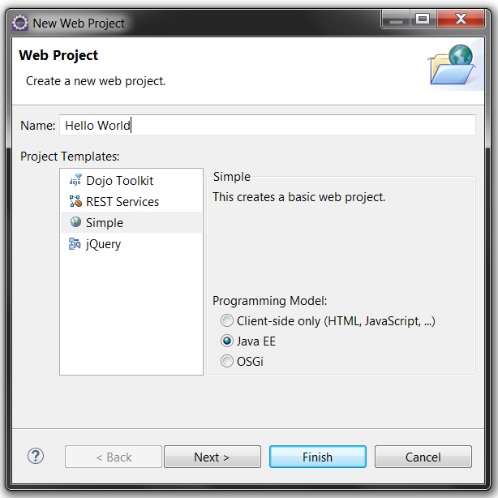
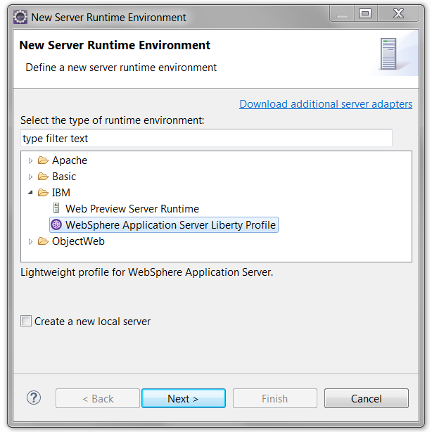
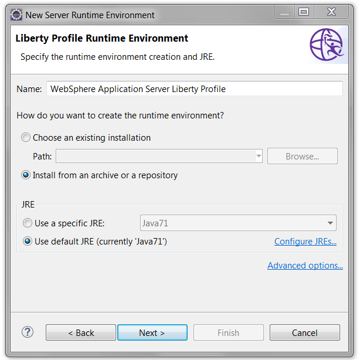
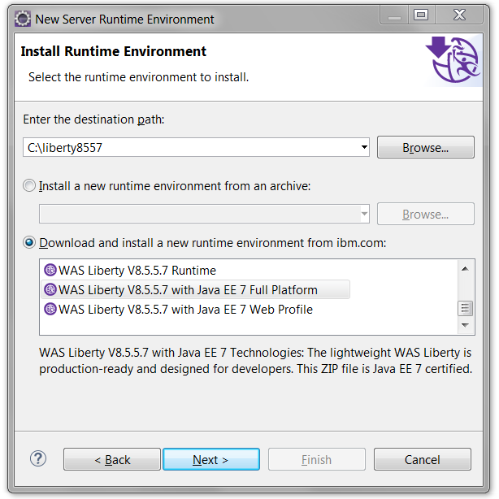
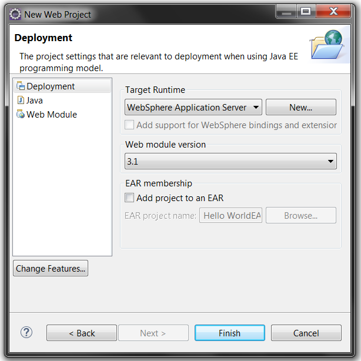
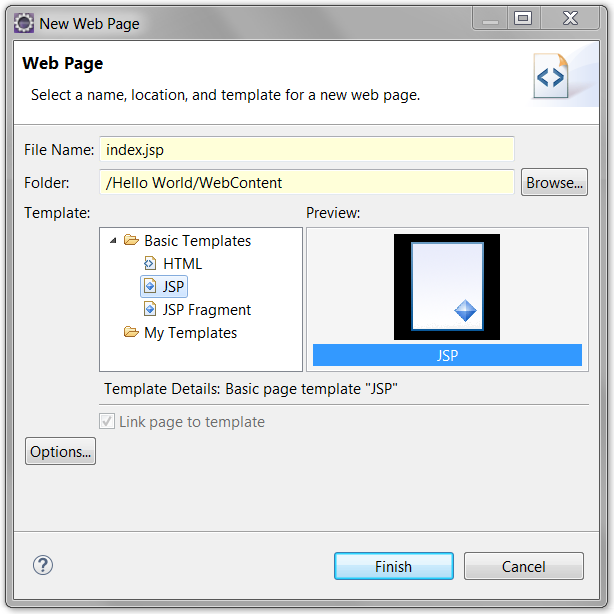
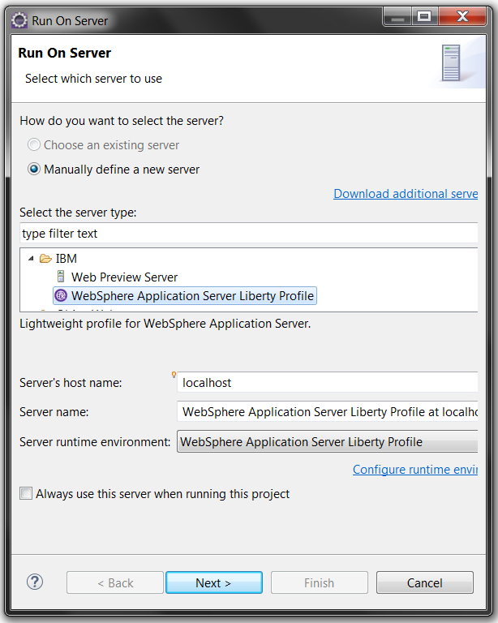
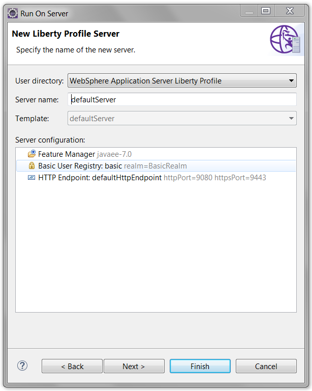

This article (updated for Eclipse Mars) looks at how to get started with WebSphere Developer Tools (WDT) for Eclipse to quickly create a Hello World app and deploy it to a Liberty server. Like in other articles in this series (e.g. Get started with a Hello World app on Liberty using IntelliJ IDEA), we’ll use a simple Hello World application so that we can show how to develop it using various development tools.
- Download and start Eclipse, then drag and drop this button on to the Eclipse toolbar to open the WDT installer:

(Alternatively, in Eclipse, click Help > Eclipse Marketplace… and search for WebSphere Developer Tools for your version of Eclipse.)
- Once you have WDT installed (and the IDE running) the next step is to create a project. This is simple to do from the Web or Java EE perspectives using File > New > Web Project.
- In the new Project wizard, enter
Hello Worldas the project name, ensure that the project template is Simple and the Programming Model is Java EE, and then click Next.
 - Ensure Deployment is selected and by Target Runtime click New….
- Select WebSphere Application Server Liberty Profile and click Next.
 - Enter the path to your WAS Liberty installation and click Finish. If you don’t yet have WAS Liberty installed, you can select Install from an archive or a repository then click Next.
 - Enter the location in which you would like to install WAS Liberty then select where you would like to install it from. If you have not downloaded it already, select Download and install a new runtime environment from: to display the runtime options available from the Liberty Repository. Select the V8.5.5.x version then click Next.
If you select Full Platform, you will have to configure theserver.xmlfile in the server you create in Step 17.
 - You don’t need to install any add-ons for this application so just click Next again, then accept the licence and click Finish. When WAS Liberty has been installed and the server created, you’re returned to the New Web Project wizard.
- Clear the Add project to an EAR check box and click Finish.
 - To create the simple JSP used in this example, right-click the Hello World project and click New > Web Page.
- Enter
index.jspas the File name and ensure that Basic Templates > JSP is selected. Click Finish.

WDT will create and open the JSP for you. - First of all, let’s give the JSP an appropriate title. To do this, update
indexto beHello World - Between the <body> and </body> tags add:
<h1>Good <% if (new GregorianCalendar().get(Calendar.HOUR_OF_DAY) < 12) {%><br />Morning<br /><% } else { %><br />Afternoon<br /><% } %></h1>WDT will automatically add imports to the JSP for the Java classes being used if you press CTRL-Space (CMD-Space on a mac) after typing the class name. This will add the following imports at the top of the jsp file:
<%@page import="java.util.Calendar"%> <%@page import="java.util.GregorianCalendar"%>
- Save the file. We are now ready to deploy our application.
- Right click on Hello World and select Run As > Run on Server.
- Since no server has been defined to the IDE we need to define one. Select Manually define a new server and select IBM > WebSphere Application Server Liberty Profile and click Next.
 - Click Finish.

{kind=link}
{kind=link}
{kind=link}
{kind=link}
{kind=link}
{kind=link}
{kind=link}
{kind=link}
WDT will launch deploy the application, start the server, and open the web page in the integrated web browser for you:
{kind=link}
Not only that but it’ll run the application from the Eclipse workspace, to give you the fastest edit, compile, run, debug cycle possible.
Hi There,
if i create an application eg. like the one you have, can other users on the same network access the application.
If i developed in was liberty in eclipse, the war generated can run on WebSphere Application Server Network development?
Hi, it depends what features you use in the app. It’s likely to run on WebSphere Application Server if it uses only Java EE 7 or Java EE 7 web profile features. To be sure, you can run the Migration Toolkit for Application Binaries: https://developer.ibm.com/wasdev/docs/migration-toolkit-application-binaries-tech/#all
Hope that helps.
To expand on what Laura said, if your application uses Java EE features/APIs and no Liberty specific features/APIs, then it should run on WebSphere Application Server Network Deployment. If you are using any Java EE 7 features, you must deploy on WebSphere traditional V9, whereas if you are using only Java EE 6 features you can deploy on WebSphere traditional V8.5.5 or V9.
The migration toolkit that Laura mentioned is used when migrating between versions of WebSphere traditional, or from WebSphere traditional to Liberty. It does not check for portability from Liberty to WebSphere traditional, since application fidelity is assured when using Java EE features/APIs.
Followed steps as close as Eclipse Oxygen would allow until Step 17 which was very different and launching the app gets
This page can’t be displayed
•Make sure the web address http://localhost:9080 is correct.
•Look for the page with your search engine.
•Refresh the page in a few minutes.
Pasting the http://localhost:9080/Hello World/index.jsp URL in a browser gets
Unable to connect Firefox can’t establish a connection to the server at localhost:9080.
Eclipse Oxygen does not show any option for New > Web Page. New > Other seems to be able to create every kind of file except .jsp. Doesn’t matter where the context click happens, on the expanded WebContent folder in Hello World or anywhere else.
Anyone know how to proceed in Oxygen? Will go back to Neon and see if that helps but it would be nice to know what is up with the latest release.
I can see New > JSP file if I right-click the project or from File > New. I’m in the Java EE perspective of Oxygen. Does that work for you? (I’ll get the instructions updated re ‘Web Page’ not being there any more.)
JUST FYI: follow the tutorial and works, about the New>web page does not exist, you can try to New > jsp file and then follow the next steps, that should work
You can use WDT to create JSF applications. When creating your web project using the Web Project wizard, go to the second page and click the “Change Features…” button, then click the checkbox beside the JavaServer Faces facet.
I hope WebSphere Developer Tools for Eclipse can develop JavaServer Faces.
But WDT can’t .
Tried to drag and drop installer on toolbar of Eclipse Kepler JEE and get the following errors during install:
Cannot complete the install because one or more required items could not be found.
Software being installed: WebSphere® Application Server Liberty Tools 16.0.3000.v20160908_1547 (com.ibm.websphere.wdt.server.tools.main.feature.group 16.0.3000.v20160908_1547)
Missing requirement: Swagger REST API UI plug-in 1.1.100.v20160602_2252 (com.ibm.etools.restapi.documentation.swagger.ui 1.1.100.v20160602_2252) requires ‘bundle org.eclipse.wst.server.core [1.6.0,2.0.0)’ but it could not be found
Missing requirement: Swagger REST API UI plug-in 1.1.200.v20160908_1547 (com.ibm.etools.restapi.documentation.swagger.ui 1.1.200.v20160908_1547) requires ‘bundle org.eclipse.wst.server.core [1.6.0,2.0.0)’ but it could not be found
Cannot satisfy dependency:
From: Swagger REST API Definition Tools Feature 1.0.100.v20160602_2252 (com.ibm.etools.restapi.documentation.feature.feature.group 1.0.100.v20160602_2252)
To: com.ibm.etools.restapi.documentation.swagger.ui [1.1.100.v20160602_2252]
Cannot satisfy dependency:
From: Swagger REST API Definition Tools Feature 1.0.200.v20160908_1547 (com.ibm.etools.restapi.documentation.feature.feature.group 1.0.200.v20160908_1547)
To: com.ibm.etools.restapi.documentation.swagger.ui [1.1.200.v20160908_1547]
Cannot satisfy dependency:
From: Swagger REST API Discovery Tools 1.0.0.v20151130_1844 (com.ibm.wdt.restapi.documentation.feature.feature.group 1.0.0.v20151130_1844)
To: com.ibm.etools.restapi.documentation.feature.feature.group 0.0.0
Cannot satisfy dependency:
From: WebSphere® Application Server Liberty Tools 16.0.2000.v20160602_2252 (com.ibm.websphere.wdt.server.tools.feature.group 16.0.2000.v20160602_2252)
To: com.ibm.wdt.restapi.documentation.feature.feature.group 1.0.0
Cannot satisfy dependency:
From: WebSphere® Application Server Liberty Tools 16.0.3000.v20160908_1547 (com.ibm.websphere.wdt.server.tools.feature.group 16.0.3000.v20160908_1547)
To: com.ibm.wdt.restapi.documentation.feature.feature.group 1.0.0
Cannot satisfy dependency:
From: WebSphere® Application Server Liberty Tools 16.0.3000.v20160908_1547 (com.ibm.websphere.wdt.server.tools.main.feature.group 16.0.3000.v20160908_1547)
To: com.ibm.websphere.wdt.server.tools.feature.group 16.0.2000
Any suggestions would be appreciated!
Hi,
Issue “Could not connect to any download sites. Check your internet connection and try again.” when step-7 is being followed.
Please help on that.
Note: Internet connection is working fine
It’s working F9 now… üôÇ
Getting to this tutorial wasn’t easy, but this tutorial was well written!
Excellent tutorial – thank you! Instructions were clear, everything worked great for me.
On Mac OSX I used Control+Space because Command+Space launches Spotlight Search.
There was no selection for Simple Web Project (only Static or Dynamic) – after several iterations I settled for setting the server first then selecting Dynamic Web Project – that worked.
It sounds like you were on the File > New > Other dialog looking for a Simple Web Project to be listed, which isn’t what the article was leading you through. There should be choices for Static Web Project, Dynamic Web Project and Web Project within Eclipse once you have WDT installed. Once you select Web Project and click Next you should get the Simple Web Project option.
It worked, but I had to change the address to:
http://localhost:9080/HelloWorld/HelloWorld.jsp
Otherwise, I was getting this error:
Error 404: SRVE0190E: File not found: /
Is it normal, should I be worried? I’m going to have to do some serious stuff with this and I’m afraid that I will run into a wall later, because of this apparently simple issue.
It looks like in step 11 you entered HelloWorld.jsp rather than index.jsp which is why it didn’t come up so this is perfectly normal. If the jsp isn’t listed as a welcome page then it wont be served from /. By default index.jsp is in the welcome page list which is why that would come up and your run through didn’t.
我在eclipse luna（windows7、oracle jdk8）下尝试了本例，成功了。但是liberty是离线下载的，下载地址：https://developer.ibm.com/wasdev/downloads/#asset/runtimes-8.5.5-wlp-javaee7，文件是wlp-javaee7-8.5.5.7.zip。
I tried to follow the instructions to the letter (except for the buttons which seem to be in a different place in my eclipse) and at the end of it I failed to run due to the following error:
[ERROR ] CWWKS9582E: The [defaultSSLConfig] sslRef attributes required by the orb element with the defaultOrb id have not been resolved within 10 seconds. As a result, the applications will not start. Ensure that you have included a keyStore element and that Secure Sockets Layer (SSL) is configured correctly. If the sslRef is defaultSSLConfig, then add a keyStore element with the id defaultKeyStore and a password.
I am new to WAS and Liberty so I’m not sure what to do with this and how to fix it.
I searched for the error code but it got me nowhere.
You need to add configuration for a keystore. The server.xml for your server explains this. We are working to remove this need. Add this but enter your own password.
Working with Liberty version 8.5.5.6. I encountered same problem when I first performed tutorial by selecting the Liberty Full Profile (~95 MB download) for the runtime environment. I retried but downloaded the smaller Liberty Web Profile (~65 MB) runtime, which as of this date, does not appear to have the security component configured by default. Tutorial worked as published.
Using eclipse Mars
after the license terms I always get stuck with “New Remote Liberty Profile Server” and it is asking for authorization credentials. This happens even if I choose the Kernel or Runtime option and don’t select application security. Stuck.
Sorry, figured it out. If another adaptor (say Pivotal) was selected first, it might set the hostname to “Cloud”. When the adaptor “Websphere Liberty” is selcted on the first panel, you are NOT allowed to change the hostname. But if you select the folder name (such as IBM) you can change the name from Cloud to something else.
If the hostname is localhost, all works. If the hostname isnt’ localhost, you get asked for credentials.
Very good tutorial but in my case, Ctrl+Space didn’t work.
What I had to add manually before html tag:
You can change your ctrl space to ctrl 6. becasue there is a conflict between Languadge setting and Content Asist
Very nice. Worked perfectly. I just started to learn WAS/Java and this is a very good material.
Thanks
Hi Vijay, I am trying to learn JAVA and trying my hand at pushing the code to Bluemix. I stumbled upon this article and found that you were or are learning the same. Did you have success in pushing applications or code apart from the one mentioned here to local server or Bluemix, if yes would you mind sharing some resources or any learning or any tips ?
Thanks
Vivek
Worked nicely.
Thank you
Jason
Excellent! If you do hit any problems, you can get help at https://developer.ibm.com/answers/smart-spaces/24/wasdev.html